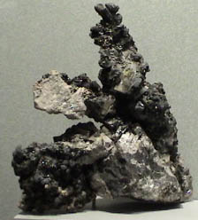

Lead
Lead is a soft, heavy, dull gray metal with low tensile strength. It is used in making type, for covering electrical cables, and in many alloys. The organic lead compound tetraethyl lead, Pb(C2H5)4, was widely used as a gasoline additive to prevent knock in automobile until concern about lead toxicity caused that use to be discontinued.
Lead forms a thin surface layer of oxide in air, which slowly changes to a basic carbonate. Hard water forms a similar coating on lead, which protects the water from further contamination with soluble lead compounds. Soft water dissolves appreciable amounts of lead, which is poisonous.
Lead monoxide, PbO, called litharge is made by heating lead in air. It is a yellow powder or yellowish-red crystalline material which is used in making lead glass.
Red lead, Pb3O4, can be made by heating lead in oxygen. It is used in glass making and for making a red paint for protecting iron and steel structures.
Lead dioxide, PbO2, is widely used in lead storage batteries. The mineral form of lead dioxide is called Plattnerite.
White lead is a basic carbonate of lead, Pb3(OH)2(CO3)2, which was widely used as a white pigment in paint until concerns about lead toxicity brought a halt to most such uses. Lead carbonate, PbCO3, in mineral form is called cerussite. Another carbonate form of lead is phosgenite. A lead mineral with both carbonate and sulfate groups is leadhillite.
Lead chromate, PbCrO4, is also used as a pigment under the name chrome yellow. A brilliant red-orange color is exhibited by the mineral crocoite, a mineral form of PbCrO4.
Lead in its metallic form is widely used for radiation shielding because of its high absorption constant for x-rays and gamma-rays.
Lead occurs naturally in the sulfide mineral galena (PbS) and occurs with vanadium in vanadinite. Lead forms a sulfide with antimony and iron called Jamesonite and sulfides with antimony called zinkenite, plagionite, semseyite and boulangerite. Dufrenoysite and gratonite are sulfides of lead with arsenic. A sulfide formed with antimony and arsenic is called jordanite. A sulfide formed with tin, iron and antimony is called cylindrite. Bournonite is a sulfide with copper, lead and antimony. A sulfide formed with tin and antimony is called franckeite. Lead is found in the mineral nagyagite, a sulfide, along with gold, iron, antimony, and tellurium. Silver joins with lead and antimony in the sulfide andorite, AgPbSb3S6. Lead, copper and iron join in the sulfide betekhtinite. In the sulfide mineral hutchinsonite,(Tl, Pb)2As5S9 , lead joins with arsenic and thallium.
Lead sulfate, PbSO4, in the mineral form anglesite is sometimes of gem quality. Another lead sulfate is lanarkite.
Lead forms an oxide mineral with titanium, iron and manganese called senaite. An oxide with zinc and vanadium is descloizite. An oxide with uranium and vanadium is Francevillite. An oxide of lead with zinc, vanadium and copper is mottramite
One lead chloride mineral is mendipite, PbO2Cl2.
A chloride of copper and lead is diaboleite. A chloride of lead and antimony is nadorite, PbSbO2Cl. Lead with chlorine and fluorine form matlockite. Other lead-containing chloride minerals are boleite, mimetite, cumengite and laurionite. Chlorine is in the lead-containing carbonate mineral phosgenite.
One mineral form of selenium is the compound with lead, clausthalite, PbSe.
Beudantite is a mineral containing iron and lead along with sulfate and arsenate groups, PbFe3(AsO4,SO4)2(OH)6. A striking green color is exhibited by the mineral bayldonite which combines copper, zinc and lead with an arsenate group.
Duftite is an arsenate mineral of lead and copper.The phosphate mineral pyromorphite , Pb5(PO4)3Cl, also exhibits a green color although it also appears in browns, reds and yellows. Lead appears with copper in caledonite. Lead appears with uranium in curite and kasolite.
|

|
Lead is one of the few elements which can be found in nature in pure form. This sample of elemental lead with pyrochroite is displayed in the Smithsonian Museum of Natural History. The large sample is about 18x30 cm and is from Langban Mine, Filipstad, Varmland, Sweden.
|
|
Index
Periodic Table
Chemistry concepts
Reference
Pauling
Ch. 26 |